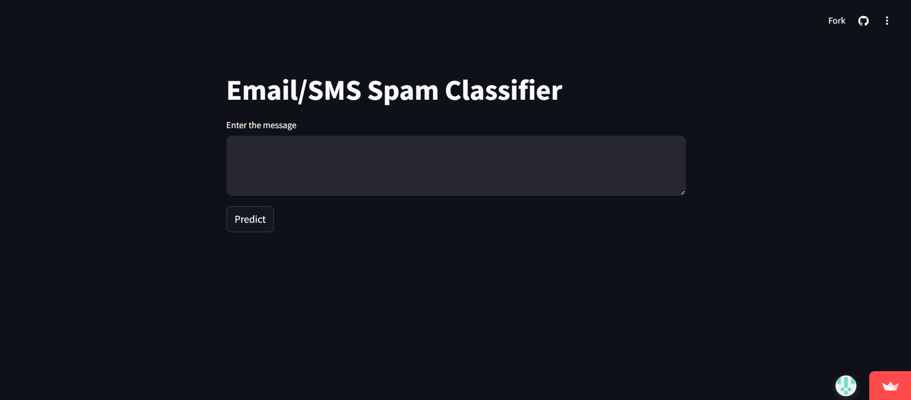

SMS & EMAIL Spam Detection

This project involves building a robust SMS and Email Spam Detection system. It utilizes the SMS Spam Collection Dataset from Kaggle. The pipeline includes comprehensive data preprocessing (tokenization, stopword removal, stemming), feature engineering using TF-IDF vectorization, and model selection. After evaluating several algorithms, Multinomial Naive Bayes was chosen for its high accuracy of 97% and precision. The final model is deployed as an interactive web application using FastAPI for the backend and Streamlit for the frontend.